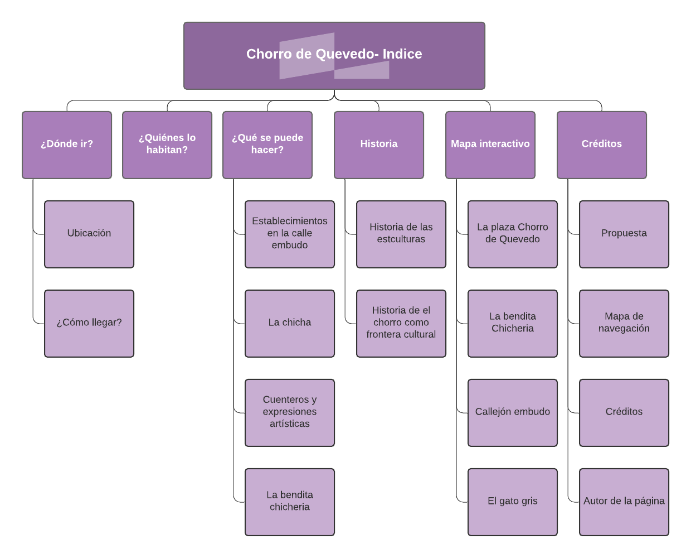

En la presente página se presenta el mapa de navegación del ejercicio final que se trata de un sitio informativo acerca del Chorro de Quevedo, en donde se puede encontrar tanto las cosas, personas y actividades que allí se pueden realizar, un poco de historia del lugar, su ibicación y un mapa interactivo con algunos de los lugares más caracteristicos del Chorro. En la página de actividades se agrego más interactividad, similar a como se hizo con el mapa interactivo, para que esta fuera más dinámica.
1. Barón Leal, L. A. (2019, junio). El Chorro de Quevedo: la maqueta de un mito, un pedestal, un lienzo. Secretaría general de Bogotá. Recuperado 1 de noviembre de 2021, de https://archivobogota.secretariageneral.gov.co/noticias/chorro-quevedo-la-maqueta-mito-pedestal-lienzo
2. Sadhú Nicolay Abril P. (2010, noviembre). Chorro de Quevedo, el lugar donde Bogotá late. Universidad Sergio Arboleda. Recuperado 5 de noviembre de 2021, de https://web.archive.org/web/20111216194546/http://www.usergioarboleda.edu.co/altus/cronica_chorro_quevedo.htm
3. Montoya Zorro A. (2018, octubre). La chicha: un licor indígena que también disfrutan los ‘millennials’. El Tiempo. Recuperado 3 de noviembre de 2021, de https://www.eltiempo.com/bogota/la-chicha-bebida-favorita-de-los-millenials-y-extranjeros-en-bogota-280922
4. Cuentería en Bogotá: verdaderos “tejedores del tiempo”. (2019, marzo) El Nuevo Siglo. Recuperado 3 de noviembre de 2021, de https://www.eltiempo.com/bogota/la-chicha-bebida-favorita-de-los-millenials-y-extranjeros-en-bogota-280922
5. Rincon Escalante, J. (2011, marzo). El guardián de los cuentos. Contándonos . Recuperado 5 de noviembre de 2021, de https://contandonos.wordpress.com/2011/03/08/4/
6. Dávila Náder, E. (2016, agosto). Una noche en la plaza donde nació Bogotá. El Espectador. Recuperado 1 de noviembre de 2021, de hhttps://www.elespectador.com/bogota/una-noche-en-la-plaza-donde-nacio-bogota-article-647515/
7. Afanador, L. (2016, agosto). Tomando Moscato Passito con mochileros en el Chorro de Quevedo. Recuperado 4 de noviembre de 2021, de https://www.soho.co/historias/articulo/tomando-moscato-passito-con-mochileros-en-el-chorro-de-quevedo/26990
8. Bogota, S. T. (2019, 16 enero). Chorro de Quevedo - Sitios Turísticos en Bogotá, Centro Histórico. Sitios Turísticos de Bogotá. Recuperado 23 de enero de 2022, de SitiosTuristicosBogota.com
9. Dhas, D. C. (2017, 27 enero). Both Tourists and local Colombian people walk up the narrow Calle del. . . iStock. Recuperado 23 de enero de 2022, de https://www.istockphoto.com/es/foto/bogot%C3%A1-colombia-turistas-y-colombianos-local-en-la-calle-del-embudo-en-el-hist%C3%B3rico-gm654860172-119110629
10. Bar, B. (2020, 2 junio). Las Siete Vidas del Gato. El Viajero Por La Sabana. Recuperado 2 de febrero de 2022, de https://www.elviajeroporlasabana.com/las-siete-vidas-del-gato-gris/
11. Zona, S. D. C. T. (2018, 4 mayo). El museo de la chicha está en el corazón de Bogotá. El Tiempo. Recuperado 25 de enero de 2022, de https://www.eltiempo.com/bogota/la-bendita-museo-de-la-chicha-en-bogota-213644
12. Tour, V. T. L. E. D. C. (2017, 18 octubre). La Bendita Chicheria. En búsqueda de La Candelaria. Recuperado 2 de febrero de 2022, de https://enbusquedadelacandelaria.wordpress.com/2017/08/30/titulo-de-la-entrada-de-blog/
© Autor de la página: Maria Fernanda Quintero Gaona, estudiante de física de la Universidad Nacional de Colombia. Trabajo para la electiva grafica interactiva.